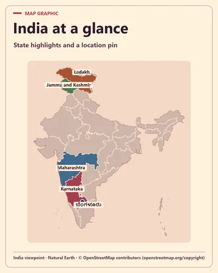

VISUAL STUDY / SAMPLE DATATHE BIG
Find the story in your data
THE BIG
PICTURE.
74%
A LITTLE SPARK. ENDLESS POSSIBILITIES.
Give your imagination somewhere to play. Turn stories, numbers and places into designs that feel unmistakably you.
Aa ಅYOUR IDEAS. YOUR LANGUAGE.
FOLLOW YOUR CURIOSITY
A little data magic. A story in motion.
A whole new perspective.
Pick a playground and make it yours.
Make the complicated click. Turn data, steps and ideas into something worth sharing.
Make your infographicTake your ideas off the page. Compose a scene, add movement and make it a video.
Set your story in motionPut your story on the map. Trace a route, move the camera and explore a new perspective.
Go somewhere with itTHE WHOLE TOOLBOX
From the first spark to the final post.
Pick a tool and get into your flow.
15 tools on your creative desk
One striking visual. Layouts, photos and type, exactly your way.
DESIGNGive your story room to unfold, one swipe at a time.
DESIGNCharts, QR codes, layers and templates for your next big explainer.
DESIGNTurn a static idea into an animated scene. Export it as video.
MOTION & MAPSIndia and world maps with animated routes and camera moves.
MOTION & MAPSShade regions, drop pins and make a place part of the picture.
MOTION & MAPSA quick chart, timeline or comparison, straight into your design.
DESIGNLet the subject stand out. Create a clean, transparent cutout.
IMAGE TOOLSGo bigger. Resize and sharpen an image before its next outing.
IMAGE TOOLSDescribe the picture in your head and create a fresh starting point.
IMAGE TOOLSFind the story in English and Kannada feeds. Make it yours.
NEWS & PUBLISHINGBring context to a developing story with timelines and explainers.
NEWS & PUBLISHINGStart with a link. Bring the headline, story and photo to your desk.
NEWS & PUBLISHINGGet the finished story out to your connected social channels.
NEWS & PUBLISHINGPlan the next edition and keep your publishing rhythm going.
NEWS & PUBLISHINGTry “poster”, “map” or “image”, or explore the full desk.
LESS FRICTION. MORE MAKING.
An idea, an article, a photo or a few numbers. Start with what you have.
Bring in a storyFind a layout. Make it move. Set the type in English or Kannada. Follow the idea.
Make something yoursDownload your design or video. Publish to your connected channels. On to the next story.
Meet your audience